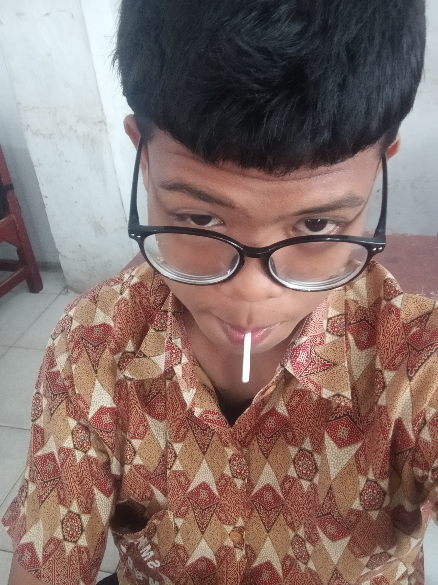

About Me
Halo! Saya Muhammad Chairawan, seorang pelajar Rekayasa Perangkat Lunak (RPL) dengan semangat untuk memahami dan menguasai kompleksitas dunia koding. Berusia 16 tahun, saya sedang mengejar eksplorasi penuh warna di dunia teknologi di kelas 11 SMK Negeri 9 Medan. Lahir pada 04 Mei 2007 di Medan, saya membawa semangat kreatif dan logika yang kuat ke setiap proyek yang saya tangani. Jurusan RPL bukan sekadar pilihan, melainkan panggung bagi ekspresi penuh potensi dalam menciptakan solusi perangkat lunak yang efisien dan inovatif. Di SMK Negeri 9 Medan., saya merajut keterampilan teknis dengan keinginan untuk selalu menghadirkan solusi yang mendefinisikan standar. Proyek-proyek saya bukan hanya mencerminkan penguasaan bahasa pemrograman, tetapi juga pandangan mendalam tentang bagaimana teknologi dapat merubah dunia. Sebagai ahli RPL, saya memahami bahwa keberhasilan dalam dunia koding bukan hanya tentang membuat program berjalan, tetapi tentang menciptakan fondasi untuk masa depan digital. Saya selalu mencari tantangan dan menyambut peluang untuk mengasah keterampilan, karena saya yakin bahwa inovasi dimulai dari keberanian untuk melangkah lebih maju. Mari bersama-sama menjelajahi potensi tanpa batas dunia perangkat lunak. Saya tidak hanya menawarkan kemampuan teknis, tetapi juga komitmen untuk terus menggali inovasi yang akan membawa kita ke era digital yang lebih cerah.